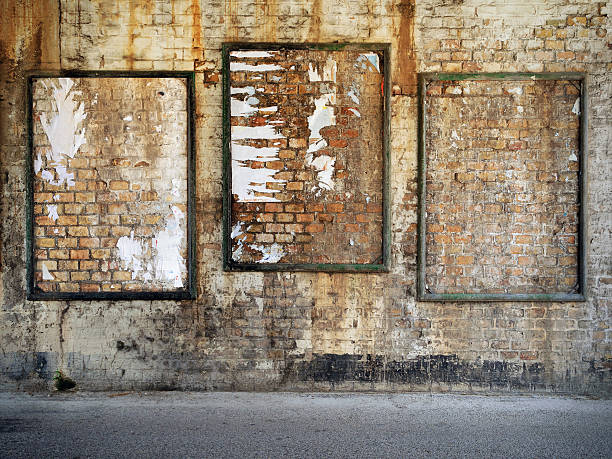
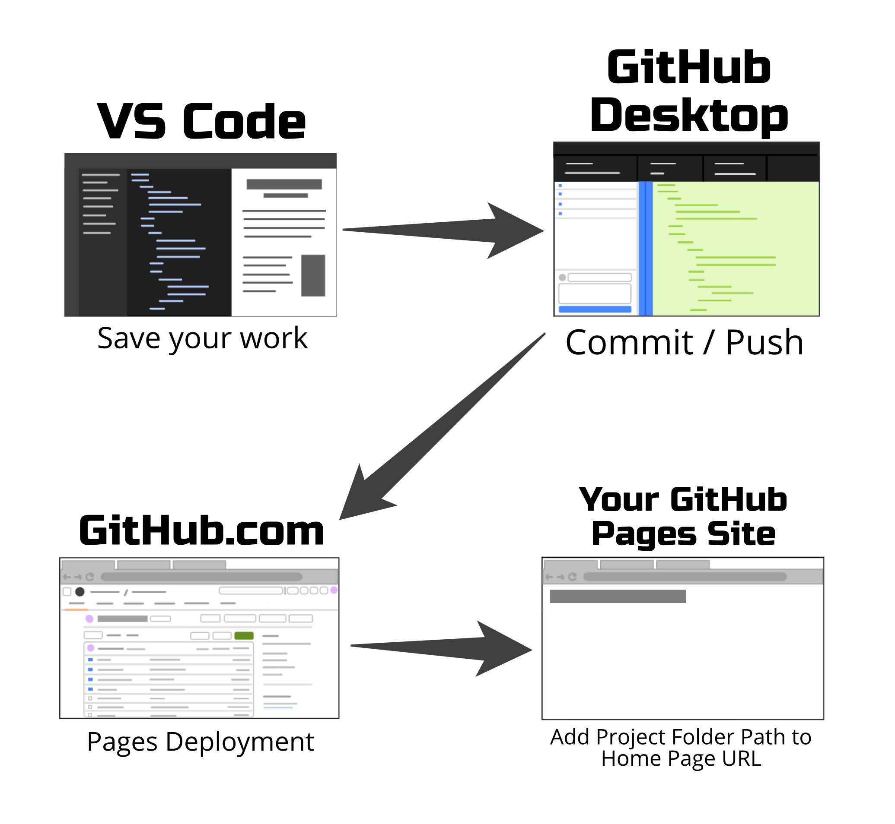

NOTE: The images above are representative of what COULD be done for this assignment; however, you are only required to add THREE (3) pieces/posters for completion (along with the other requirements). For higher res versions of the images above, click here for the Studio Gallery or here for the Alley Posters
OBJECTIVES:
-
- Select one of the two templates (Studio Gallery or Alley Posters) and add THREE (3) pieces or posters to the scene in the template
- Utilize margin, border, and padding, along with both images and text
- Practice using the CSS Properties you've learned today
NEW CONCEPTS WE'LL BE USING:
-
- CSS Properties (maybe not "brand new", but still relatively new)
- border
- border-width, border-style, border-color
- border-radius
- padding
- padding-top, padding-right, padding-bottom, padding-left
- margin
- margin-top, margin-right, margin-bottom, margin-left
HOW TO COMPLETE:
Understanding the Box Model is critical to being able to build any sort of good layout in web design; we may have learned about the three main components of the Box Model in our previous class, but there's still plenty more we can do with them for practice.
Our goal for today is to utilize border, padding, and margin to create at least three interesting and unique picture frames in an art gallery or posters on an alley wall, along with other CSS properties. We want you to explore how the three components of the Box Model can be used for much more than just "spacing".
If you're unsure about how to unzip the project templates below, or how to get them into your repository, check out the following tutorial from the Coding Cookbook - Importing a Code Template.
-
- Download and unzip ONE (1) of the following exercise templates (or both, if you want to try them both out)
- Place the unzipped folder into your repository with the name of either "studio-gallery" or "alley-posters". It should contain:
- a css folder
- setup.css (don't modify this file)
- style.css (this is the file you'll be writing your CSS in)
- an images folder
- different images will be in each template, in order to setup the scene
- you will be adding your own images, in addition to the setup images
- index.html
- Your objective is to create at least THREE (3) unique pieces/posters, one in each of the three <div> elements with the "display-area" class.
- NOTE: The "display-area" class has a max width of 33% in the template; if you want to do something where a poster or frame spans an area wider than that, you'll have to modify the CSS rules in the setup.css file to change that.
- The three pieces/posters must meet the following requirements:
- ALL must use margin to space themselves out from each other
- at least one must showcase a usage of border to create a frame
- at least one must showcase a visual usage of padding
- since padding can be invisible, we want there to be a purpose to it, like matting for a picture frame
- at least one must feature text as the main content
- at least one must feature an image as the main content
TIPS
-
-
- Be careful with your widths in this assignment; there are some sizing limitations enforced by the code template, and if you add a manual width inside of the "display-area" elements that is wider than they're set up for, you may see some very peculiar behavior.
- If you set widths on the images, try keeping them under 150px, so that they fit; remember that any margin, border, or padding that you set on the frames around them will add to that width.
- If you set widths on the frames, try to keep them under 200px or so; you'll also probably want to use relative widths on the images inside.
- If you have a mysterious gap beneath your image within a frame, and you're positive it's not due to any margin or padding you added, try setting display: block; on your image.
- There's an obscure, esoteric styling bug that can occur depending on how you set up your frames and images, which has to do with the fact that image elements are "inline" objects, that technically have space above and below them reserved for text characters that dip below the baseline (like "j", "g", etc.). Changing the image display to "block" should remedy this issue.
CHALLENGE / INSPIRATION
This is a fairly open-ended exercise; here are some ideas to consider, if you need some direction:
STUDIO GALLERY TEMPLATE
- if you choose the Studio Gallery template, try to create "picture frames" to match the scene
- picture frames, or at least an approximation of them, can be created using a border for the frame, and then background-color and padding for the matting inside (with an inset box-shadow for the illusion of depth)
- if you want to get really fancy and create a really realistic looking frame, you can nest multiple divs inside of each other, each with their own border and padding, in order to create the lines and edges that can make up a more complex frame design
- or, take advantage of the different border styles available, like "inset" and "outset", to approximate the effect of shading
ALLEY POSTERS TEMPLATE
- if you choose the Alley Posters template, frames are still relevant!
- consider using excessive padding to create an overly large frame resembling a community bulletin board of sorts, and put your smaller posters inside
- or maybe you can build metallic weather-proof frames for movie posters
- or use an inset box-shadow to create the illusion of an indentation in the wall, where a town might put official announcements, locked behind a pane of glass.
- you could also try using border and padding to create the façade of a faded poster left behind yours
- also, consider using transform: rotate(); to rotate the posters slightly, so that they look more organic and casual.
- to rotate something by 5 degrees, you would write transform: rotate(5deg); in the CSS rule for the poster.

Whatever direction you choose, be creative! Make your submission fun and unique!
HOW TO SUBMIT:

-
- SAVE ALL OF YOUR WORK BEFORE PROCEEDING (inside Visual Studio Code)
- Open your Github Desktop app and commit and push any changes you made in the project folder
- Go to github.com in the Google Chrome browser and ensure the changes to your project folder were "pushed" up to your github.com repository
- Open the Github Pages site (Settings -> Pages -> Visit site)
- or alternatively, go to the Environments/Deployments section of your repository page, click "github-pages", and then click the most recent deployment
- Add your project folder name at the end of your URL
- Open the link to your new webpage for the project.
- Confirm it actually works before you submit it!!!
- Copy the URL in the address bar and submit it to receive credit for this assignment.
- Example URL: http://username.github.io/code-skeleton/
- This example assumes you followed the initial setup instructions correctly; if you deviated or made any mistakes, your URL may look a little different